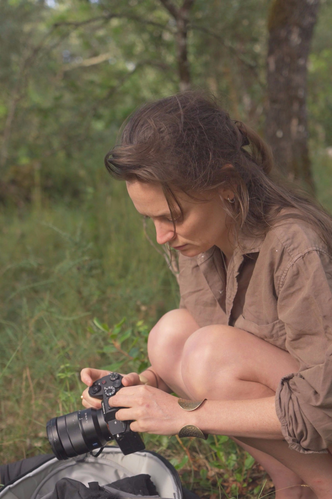
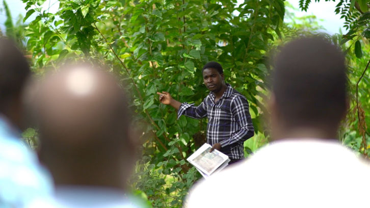
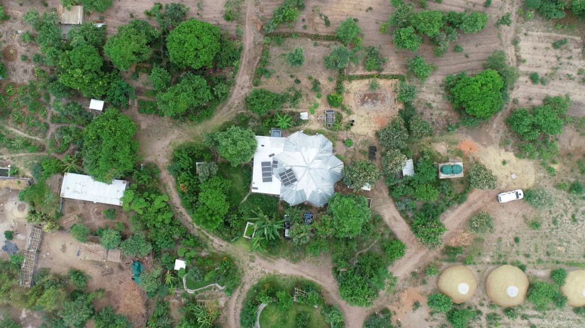
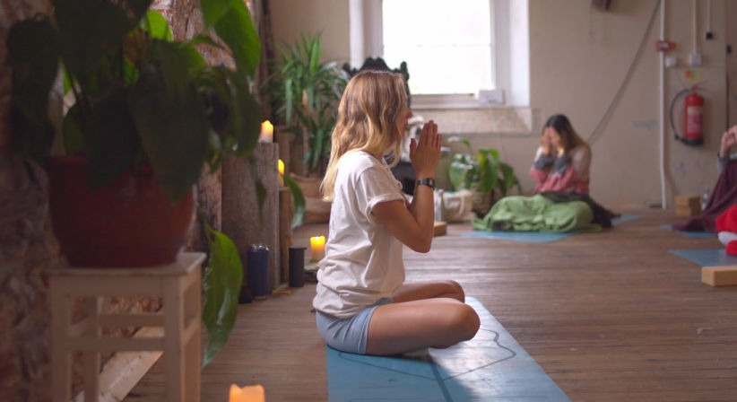

A good videographer turns complicated ideas into simple, clear videos that people actually want to watch. It’s not just about pressing record on a camera. Professional teams also help plan the video, figure out what to say, organize the shoot, and edit everything so business owners don’t have to worry about it.
Good video work mixes storytelling with marketing. The goal is to make videos that feel real and natural, but still help people understand a brand.
It can be hard to find videographers who are both creative and focused on results. Most people agree that knowing how to use a camera is just the starting point. What really matters is how well someone works with clients, how they choose what to show in a video, and how well they adjust to different projects.

Creative skill is only part of what makes a great videographer. Most professionals agree that the way a videographer works with people is just as important as the footage they capture.
Helping people feel comfortable on camera
Most business owners and founders feel nervous when a camera is pointed at them. A good videographer doesn’t just film and say “action.” They help people relax, guide them gently, and make the process feel natural. This is how you get real smiles and honest stories instead of stiff, awkward answers.
Working closely with clients
A videographer isn’t just someone who follows a checklist. They also help plan the video from the start—shaping ideas, organising what needs to be filmed, and guiding the whole process. This takes the pressure off the client so they’re not left guessing what comes next.
Being respectful on real shoots
When filming charities, communities, or sensitive environments, a good videographer knows how to be respectful. They understand when to step in for a powerful shot and when it’s better to step back and let things happen naturally.
Giving each project proper attention
Good video work takes time and focus. Many experienced videographers choose to take on fewer projects so they can give each one proper attention—from planning all the way through to editing. This means better communication, smoother shoots, and stronger results.
Professional videography uses a mix of different skills, not just filming. To make videos that work well on websites, YouTube, and social media, a good videographer needs to understand a few different areas.
Capturing real, natural moments
One big part of videography is documentary-style filming—catching real moments as they happen instead of forcing them. This takes quick thinking and a good eye for emotion. Whether it’s a potter shaping clay or a chef plating food, a skilled videographer knows how to spot small moments that help tell the story and build trust.
Using drones for a wider view
For places like boutique hotels, travel spots, or nature projects, drones help show everything from above. When used well, they don’t just look cool—they help people understand the size, setting, and beauty of a place. Good videographers use them carefully and with purpose, not just for flashy shots.
Getting clear, good-quality sound
Sound is just as important as video—sometimes even more. If the sound is bad, people will stop watching quickly. That’s why videographers often use special microphones and check audio levels while filming. They also add natural background sounds later to make the video feel more real and immersive.
Telling a clear story
A video isn’t just a random mix of clips—it needs a simple structure. Good videographers think about how the story starts, what keeps people interested, and how it leads them to understand the brand. This helps turn a nice-looking video into something that actually has purpose and direction.
Good brand videos are built on simple visual rules that have been used in film and photography for a long time. These rules help make videos easy to watch and keep people’s attention.
Framing and using light well
One of the main ideas is something called the “rule of thirds.” This just means placing the main subject slightly off-centre in the frame instead of in the middle, which makes the shot feel more balanced and natural.
Light is also really important. Good videographers try to use natural light where possible—like sunlight coming through a window or outdoor light at certain times of day. When used well, light helps create depth, mood, and a more natural look without everything feeling overly staged.
Moving the camera with purpose
Any camera movement—like panning, tilting, or moving closer—should have a reason behind it. Smooth, simple movement helps the viewer stay focused on the story. On the other hand, random or shaky movement can be distracting and take away from the message. The goal is to make everything feel steady, intentional, and easy to watch.
Framing people properly
How people are placed in the frame matters. Good videographers leave a bit of space above a person’s head so the shot doesn’t feel cramped. They also think about “where the person is looking,” leaving space in front of them so the shot feels natural and balanced.
Keeping conversations clear
When filming two people talking, there’s a simple guideline that helps avoid confusion: the camera should stay on one side of an invisible line between them. This keeps it clear who is looking at who, so the conversation feels natural and easy to follow.
People on forums like Reddit and Quora often agree that having a fancy camera reel isn’t enough to make someone great anymore. What really matters is how reliable someone is, how they work with people, and how well they do their job from start to finish.
Making the whole process easy and stress-free
A great videographer doesn’t just show up and film—they make the whole experience smooth and easy. They arrive on time, set everything up safely, give clear instructions, and help people feel comfortable. The goal is to make filming feel relaxed instead of stressful.
Keeping things simple and natural
Some beginners try to make everything look super dramatic or over-edited, but that can actually hurt the final video. Good videographers know when to keep things simple. They choose natural colours, smooth camera movement, and a style that fits the brand instead of trying to make everything look like a movie.
Being prepared for problems
On real shoots, things don’t always go perfectly. Batteries can run out, sound can fail, or lighting can change. A good videographer is always prepared for this by bringing backups and extra equipment so filming can keep going without delays.
Making more than just one video
A smart videographer doesn’t just think about one final video. They plan ahead so one shoot can create lots of useful content—like a main video for a website, plus shorter clips for social media like Instagram, TikTok, or Pinterest. This gives the business much more value from the same shoot.



Yes, hiring a videographer is worth it if you want your business to be understood.
But the real value isn't just in the camera work. It's in understanding people, what captures attention (without weird trends) and how audiences find you online. And knowing how to turn all of that into videos that feel like you and your business.
We're Katy and Eugene two videographers and that's what we focus on, relaxed filming, thoughtful strategy, clear storytelling, and videos that do the work while you stay present doing what you love!
If that sounds good to you, we'd love to chat.
katy@munjiri.com
Blog post by Katy co-founder of Munjiri Videos (or in plain English, I'm one of the two videographer's helping businesses share what they do!)